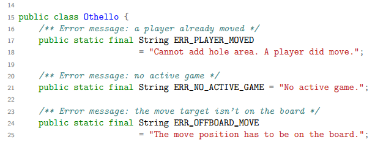

I often need to print source code. Some years ago for a German competition called "Bundeswettbewerb Informatik", now for projects at my university. If you use LaTeX, you can simply include the source code into your document! Here are three examples with listings and minted. I've also included example PDF files.
Contents
listings
Minimal example
{kind=link}
LaTeX Java Source Code: listings
Here is an minimal example how you could print Source Code with LaTeX:
\documentclass[a4paper,12pt]{article}
\usepackage{amssymb} % needed for math
\usepackage{amsmath} % needed for math
\usepackage[utf8]{inputenc} % this is needed for german umlauts
\usepackage[ngerman]{babel} % this is needed for german umlauts
% this is needed for correct output of umlauts in pdf
\usepackage[T1]{fontenc}
\usepackage[margin=2.5cm]{geometry} %layout
\usepackage{listings} % needed for the inclusion of source code
% this is needed for forms and links within the text
\usepackage{hyperref}
%%%%%%%%%%%%%%%%%%%%%%%%%%%%%%%%%%%%%%%%%%%%
% THE DOCUMENT BEGINS %
%%%%%%%%%%%%%%%%%%%%%%%%%%%%%%%%%%%%%%%%%%%%
\begin{document}
\lstinputlisting[language=Java]{Othello.java}
\end{document}
My Template
If you want to customize a little bit more and if you want to get highlighted (colorized) source code, you could use the following template. It looks like this as a PDF-file.
\documentclass[a4paper,12pt]{article}
\usepackage{amssymb} % needed for math
\usepackage{amsmath} % needed for math
\usepackage[utf8]{inputenc} % this is needed for german umlauts
\usepackage[ngerman]{babel} % this is needed for german umlauts
\usepackage[T1]{fontenc} % this is needed for correct output of umlauts in pdf
\usepackage[margin=2.5cm]{geometry} %layout
\usepackage{listings} % needed for the inclusion of source code
% the following is needed for syntax highlighting
\usepackage{color}
\definecolor{dkgreen}{rgb}{0,0.6,0}
\definecolor{gray}{rgb}{0.5,0.5,0.5}
\definecolor{mauve}{rgb}{0.58,0,0.82}
\lstset{ %
language=Java, % the language of the code
basicstyle=\footnotesize, % the size of the fonts that are used for the code
numbers=left, % where to put the line-numbers
numberstyle=\tiny\color{gray}, % the style that is used for the line-numbers
stepnumber=1, % the step between two line-numbers. If it's 1, each line
% will be numbered
numbersep=5pt, % how far the line-numbers are from the code
backgroundcolor=\color{white}, % choose the background color. You must add \usepackage{color}
showspaces=false, % show spaces adding particular underscores
showstringspaces=false, % underline spaces within strings
showtabs=false, % show tabs within strings adding particular underscores
frame=single, % adds a frame around the code
rulecolor=\color{black}, % if not set, the frame-color may be changed on line-breaks within not-black text (e.g. commens (green here))
tabsize=4, % sets default tabsize to 2 spaces
captionpos=b, % sets the caption-position to bottom
breaklines=true, % sets automatic line breaking
breakatwhitespace=false, % sets if automatic breaks should only happen at whitespace
title=\lstname, % show the filename of files included with \lstinputlisting;
% also try caption instead of title
keywordstyle=\color{blue}, % keyword style
commentstyle=\color{dkgreen}, % comment style
stringstyle=\color{mauve}, % string literal style
escapeinside={\%*}{*)}, % if you want to add a comment within your code
morekeywords={*,...} % if you want to add more keywords to the set
}
% this is needed for forms and links within the text
\usepackage{hyperref}
%%%%%%%%%%%%%%%%%%%%%%%%%%%%%%%%%%%%%%%%%%%%%%%%%%%%%%%%%%%%%%%%%%%%%%
% Variablen %
%%%%%%%%%%%%%%%%%%%%%%%%%%%%%%%%%%%%%%%%%%%%%%%%%%%%%%%%%%%%%%%%%%%%%%
\newcommand{\authorName}{Martin Thoma}
\newcommand{\tags}{\authorName, my, tags}
\title{This is the title}
\author{\authorName}
\date{\today}
%%%%%%%%%%%%%%%%%%%%%%%%%%%%%%%%%%%%%%%%%%%%%%%%%%%%%%%%%%%%%%%%%%%%%%
% PDF Meta information %
%%%%%%%%%%%%%%%%%%%%%%%%%%%%%%%%%%%%%%%%%%%%%%%%%%%%%%%%%%%%%%%%%%%%%%
\hypersetup{
pdfauthor = {\authorName},
pdfkeywords = {\tags},
pdftitle = {This is the title}
}
%%%%%%%%%%%%%%%%%%%%%%%%%%%%%%%%%%%%%%%%%%%%%%%%%%%%%%%%%%%%%%%%%%%%%%
% THE DOCUMENT BEGINS %
%%%%%%%%%%%%%%%%%%%%%%%%%%%%%%%%%%%%%%%%%%%%%%%%%%%%%%%%%%%%%%%%%%%%%%
\begin{document}
\lstinputlisting[language=Java]{Othello.java}
\end{document}
Supported Languages
The LaTeX listings package provides quite a lot of language and dialects. Each bold dialect is the default dialect:
First the interesting ones:
- Assembler (Motorola68k, x86masm)
- bash
- C (ANSI, Handel, Objective, Sharp)
- C++ (ANSI, GNU, ISO, Visual)
- Java (empty, AspectJ)
- Python
- SQL
- TeX (AlLaTeX, common, LaTeX, plain, primitive)
- XML
And the rest: ABAP (R/2 4.3, R/2 5.0, R/3 3.1, R/3 4.6C, R/3 6.10), ACSL, Ada (2005, 83, 95), Algol (60, 68), Ant, Awk (gnu, POSIX), Basic (Visual), Caml (light, Objective), CIL, Clean, Cobol (1974, 1985, ibm), Comal 80, command.com (WinXP), Comsol, csh, Delphi, Eiffel, Elan, erlang, Euphoria, Fortran (77, 90, 95), GCL, Gnuplot, Haskell, HTML, IDL (empty, CORBA), inform, JVMIS, ksh, Lingo, Lisp (empty, Auto), Logo, make (empty, gnu), Mathematica (1.0, 3.0, 5.2), Matlab, Mercury, MetaPost, Miranda, Mizar, ML, Modula-2, MuPAD, NASTRAN, Oberon-2, OCL (decorative, OMG), Octave, Oz, Pascal (Borland6, Standard, XSC), Perl, PHP, PL/I, Plasm, PostScript, POV, Prolog, Promela, PSTricks, R, Reduce, Rexx, RSL, Ruby, S (empty, PLUS), SAS, Scilab, sh, SHELXL, Simula (67, CII, DEC, IBM), SPARQL, tcl (empty, tk), VBScript, Verilog, VHDL (empty, AMS), VRML (97), XSLT
minted
Minted needs the package pygments:
sudo apt-get install python-pygments
Supported Languages
Minted supports quite a lot of languages. You can get the supported languages with this command:
moose@pc07:~$ pygmentize -L lexers
This is my output:
Pygments version 1.2.2, (c) 2006-2008 by Georg Brandl.
Lexers:
- Cucumber, cucumber, Gherkin, gherkin: Gherkin (filenames *.feature)
- abap: ABAP (filenames *.abap)
- antlr: ANTLR [a lot more gets supported, I've shortened it]
- apacheconf, aconf, apache: ApacheConf (filenames .htaccess, apache.conf, apache2.conf)
- applescript: AppleScript (filenames *.applescript)
- as, actionscript: ActionScript (filenames *.as)
- as3, actionscript3: ActionScript 3 (filenames *.as)
- aspx-cs: aspx-cs (filenames *.aspx, *.asax, *.ascx, *.ashx, *.asmx, *.axd)
- aspx-vb: aspx-vb (filenames *.aspx, *.asax, *.ascx, *.ashx, *.asmx, *.axd)
- asy: Asymptote (filenames *.asy)
- basemake: Makefile
- bash, sh: Bash (filenames *.sh, *.ebuild, *.eclass)
- bat: Batchfile (filenames *.bat, *.cmd)
- bbcode: BBCode
- befunge: Befunge (filenames *.befunge)
- boo: Boo (filenames *.boo)
- brainfuck, bf: Brainfuck (filenames *.bf, *.b)
- c-objdump: c-objdump (filenames *.c-objdump)
- c: C (filenames *.c, *.h)
- cheetah, spitfire: Cheetah (filenames *.tmpl, *.spt)
- clojure, clj: Clojure (filenames *.clj)
- cmake: CMake (filenames *.cmake)
- common-lisp, cl: Common Lisp (filenames *.cl, *.lisp, *.el)
- console: Bash Session (filenames *.sh-session)
- control: Debian Control file (filenames control)
- cpp, c++: C++ (filenames *.cpp, *.hpp, *.c++, *.h++, *.cc, *.hh, *.cxx, *.hxx)
- cpp-objdump, c++-objdumb, cxx-objdump: cpp-objdump (filenames *.cpp-objdump, *.c++-objdump, *.cxx-objdump)
- csharp, c#: C# (filenames *.cs)
- css: CSS (filenames *.css) [a lot more gets supported, I've shortened it]
- cython, pyx: Cython (filenames *.pyx, *.pxd, *.pxi)
- d-objdump: d-objdump (filenames *.d-objdump)
- d: D (filenames *.d, *.di)
- delphi, pas, pascal, objectpascal: Delphi (filenames *.pas)
- diff, udiff: Diff (filenames *.diff, *.patch)
- django, jinja: Django/Jinja
- dpatch: Darcs Patch (filenames *.dpatch, *.darcspatch)
- dylan: Dylan (filenames *.dylan)
- erb: ERB
- erl: Erlang erl session (filenames *.erl-sh)
- erlang: Erlang (filenames *.erl, *.hrl)
- evoque: Evoque (filenames *.evoque)
- fortran: Fortran (filenames *.f, *.f90)
- gas: GAS (filenames *.s, *.S)
- genshi, kid, xml+genshi, xml+kid: Genshi (filenames *.kid)
- genshitext: Genshi Text
- glsl: GLSL (filenames *.vert, *.frag, *.geo)
- gnuplot: Gnuplot (filenames *.plot, *.plt)
- go: Go (filenames *.go)
- groff, nroff, man: Groff (filenames *.[1234567], *.man)
- haskell, hs: Haskell (filenames *.hs)
- html: HTML (filenames *.html, *.htm, *.xhtml, *.xslt) [a lot more gets supported, I've shortened it]
- ini, cfg: INI (filenames *.ini, *.cfg, *.properties)
- io: Io (filenames *.io)
- irc: IRC logs (filenames *.weechatlog)
- java: Java (filenames *.java)
- js, javascript: JavaScript (filenames *.js) [a lot more gets supported, I've shortened it]
- jsp: Java Server Page (filenames *.jsp)
- lhs, literate-haskell: Literate Haskell (filenames *.lhs)
- lighty, lighttpd: Lighttpd configuration file
- llvm: LLVM (filenames *.ll)
- logtalk: Logtalk (filenames *.lgt)
- lua: Lua (filenames *.lua)
- make, makefile, mf, bsdmake: Makefile (filenames .mak, Makefile, makefile, Makefile., GNUmakefile)
- mako: Mako (filenames *.mao)
- mako: Mako (filenames *.mao)
- matlab, octave: Matlab (filenames *.m)
- matlabsession: Matlab session
- minid: MiniD (filenames *.md)
- modelica: Modelica (filenames *.mo)
- moocode: MOOCode (filenames *.moo)
- mupad: MuPAD (filenames *.mu)
- mxml: MXML (filenames *.mxml)
- myghty: Myghty (filenames *.myt, autodelegate)
- mysql: MySQL
- nasm: NASM (filenames *.asm, *.ASM)
- newspeak: Newspeak (filenames *.ns2)
- nginx: Nginx configuration file
- numpy: NumPy
- objdump: objdump (filenames *.objdump)
- objective-c, objectivec, obj-c, objc: Objective-C (filenames *.m)
- ocaml: OCaml (filenames *.ml, *.mli, *.mll, *.mly)
- ooc: Ooc (filenames *.ooc)
- perl, pl: Perl (filenames *.pl, *.pm)
- php, php3, php4, php5: PHP (filenames *.php, *.php[345])
- pot, po: Gettext Catalog (filenames *.pot, *.po)
- pov: POVRay (filenames *.pov, *.inc)
- prolog: Prolog (filenames *.prolog, *.pro, *.pl)
- py3tb: Python 3.0 Traceback (filenames *.py3tb)
- pycon: Python console session
- pytb: Python Traceback (filenames *.pytb)
- python, py: Python (filenames *.py, *.pyw, *.sc, SConstruct, SConscript)
- python3, py3: Python 3
- ragel: Ragel [a lot more gets supported, I've shortened it]
- raw: Raw token data
- rb, ruby: Ruby (filenames *.rb, *.rbw, Rakefile, *.rake, *.gemspec, *.rbx)
- rbcon, irb: Ruby irb session
- rebol: REBOL (filenames *.r, *.r3)
- redcode: Redcode (filenames *.cw)
- rhtml, html+erb, html+ruby: RHTML (filenames *.rhtml)
- rst, rest, restructuredtext: reStructuredText (filenames *.rst, *.rest)
- scala: Scala (filenames *.scala)
- scheme, scm: Scheme (filenames *.scm)
- smalltalk, squeak: Smalltalk (filenames *.st)
- smarty: Smarty (filenames *.tpl)
- sourceslist, sources.list: Debian Sourcelist (filenames sources.list)
- splus, s, r: S (filenames *.S, *.R)
- sql: SQL (filenames *.sql)
- sqlite3: sqlite3con (filenames *.sqlite3-console)
- squidconf, squid.conf, squid: SquidConf (filenames squid.conf)
- tcl: Tcl (filenames *.tcl)
- tcsh, csh: Tcsh (filenames *.tcsh, *.csh)
- tex, latex: TeX (filenames *.tex, *.aux, *.toc)
- text: Text only (filenames *.txt)
- trac-wiki, moin: MoinMoin/Trac Wiki markup
- vala, vapi: Vala (filenames *.vala, *.vapi)
- vb.net, vbnet: VB.net (filenames *.vb, *.bas)
- vim: VimL (filenames *.vim, .vimrc) ... [...]
- xml: XML (filenames *.xml, *.xsl, *.rss, *.xslt, *.xsd, *.wsdl)
- xslt: XSLT (filenames *.xsl, *.xslt)
- yaml:
YAML (filenames *.yaml, *.yml)
```
Example
This is the PDF-file produced by the following LaTeX-Code:LaTeX Java Source Code: minted
{kind=link}
\documentclass[a4paper,12pt]{article}
\usepackage{amssymb} % needed for math
\usepackage{amsmath} % needed for math
\usepackage[utf8]{inputenc} % this is needed for german umlauts
\usepackage[ngerman]{babel} % this is needed for german umlauts
\usepackage[T1]{fontenc} % this is needed for correct output of umlauts in pdf
\usepackage[margin=2cm]{geometry} %layout
\usepackage{minted} % needed for the inclusion of source code
\begin{document}
\renewcommand{\theFancyVerbLine}{
\sffamily\textcolor[rgb]{0.5,0.5,0.5}{\scriptsize\arabic{FancyVerbLine}}}
\inputminted[linenos, numbersep=5pt, tabsize=4, frame=lines, label=Othello.java]{java}{Othello.java}
\end{document}
Material
All files can be found in LaTeX-Source-Code Archive.
See also
You might also want to try
texdoc listings
This command will show a manual as a PDF.